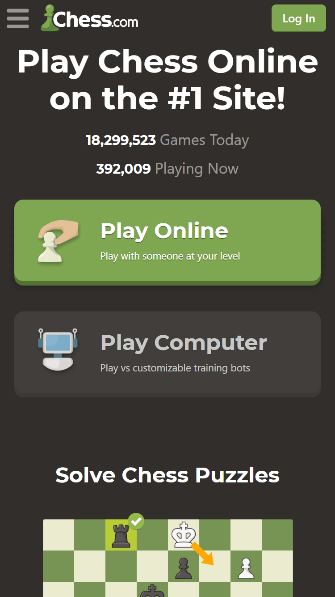
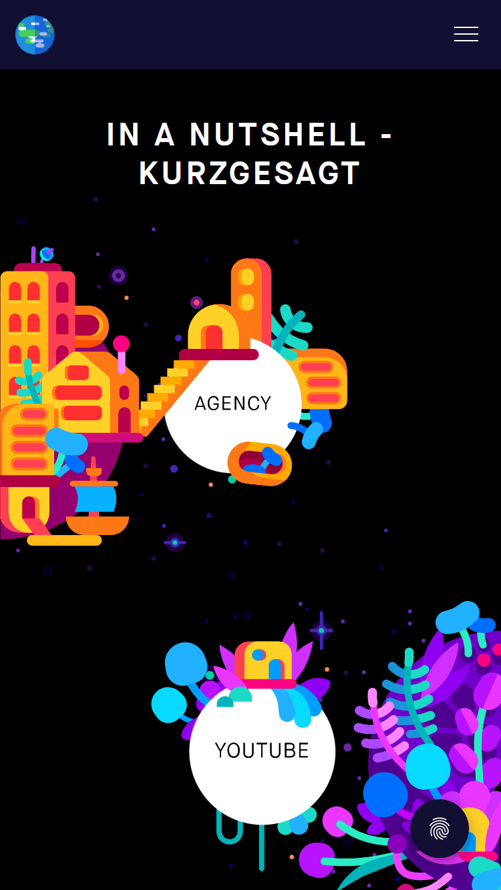

Alignment
Duolingo
duolingo.com
The page applies the principle of Alignment by using Center Horizontal Alignment. The Earth image, the heading, and the two buttons are all aligned in the center horizontally, meaning there is only one element per row. The next elements appearing after scrolling through the page are also aligned this same way. The few exceptions are the name of the organization and the links in the footer, which are aligned to the left. The organization's name is aligned to the left because it follows you while you scroll.
Repetition
Chess.com
chess.com

Throughout the page, Repetition is applied with fonts, colors, sizes, and alignments. The same color palette of gray, green, and white is repeated. The sizes of the two big buttons are the same. The sizes of the chess boards images are the same. The application of Center Horizontal Alignment is repeated throughout the page with the exception of the header.
Contrast
Kurzgesagt
kurzgesagt.org

There is a clear difference of layers thanks to the vivid colors the page uses. Normally, the contrast between layers in dark themed pages is simply black and white (or dark gray and white), but this page uses a bigger color palette. This example has three layers for the links using colors. The first layer is the dark background, the second layer is the white circle, and the third layer is the black text, which describe where the links will take the user.